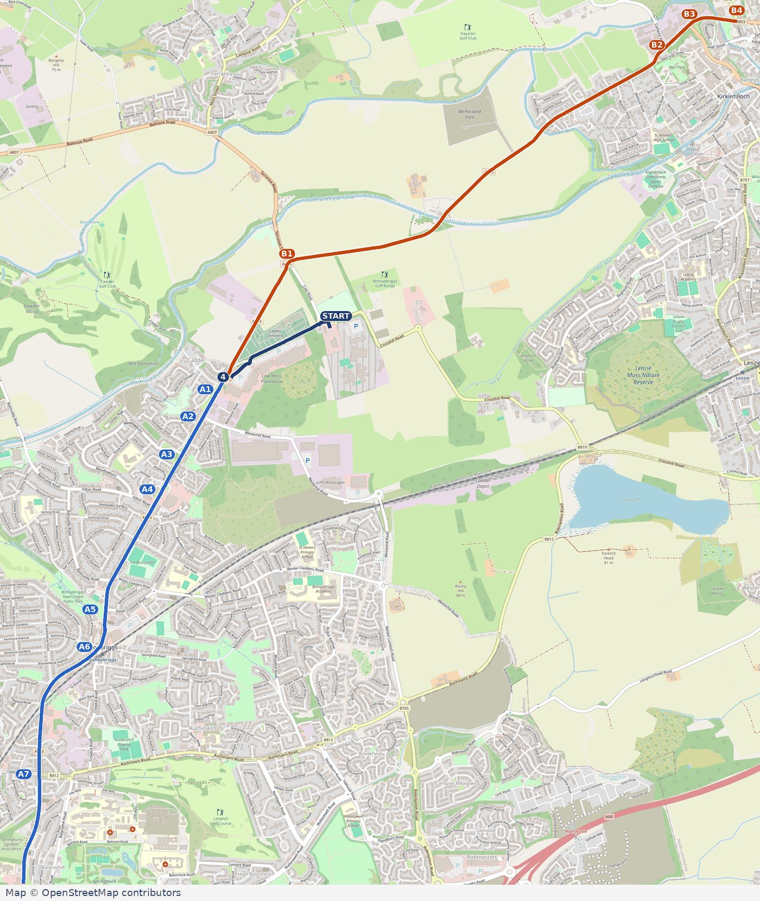
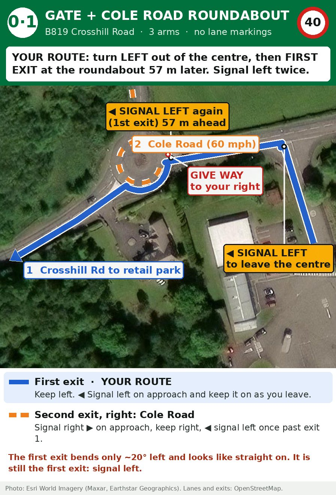
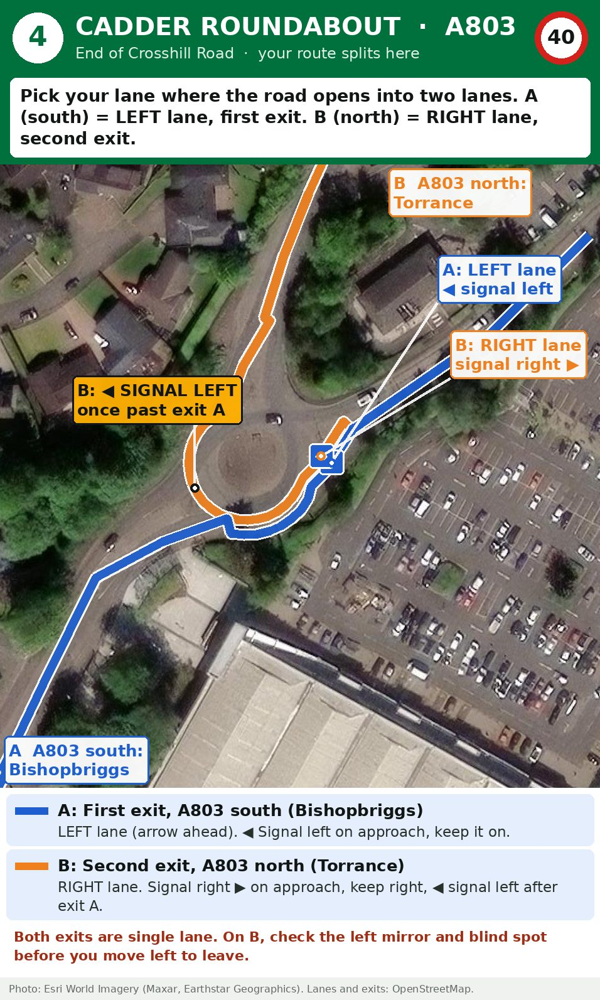
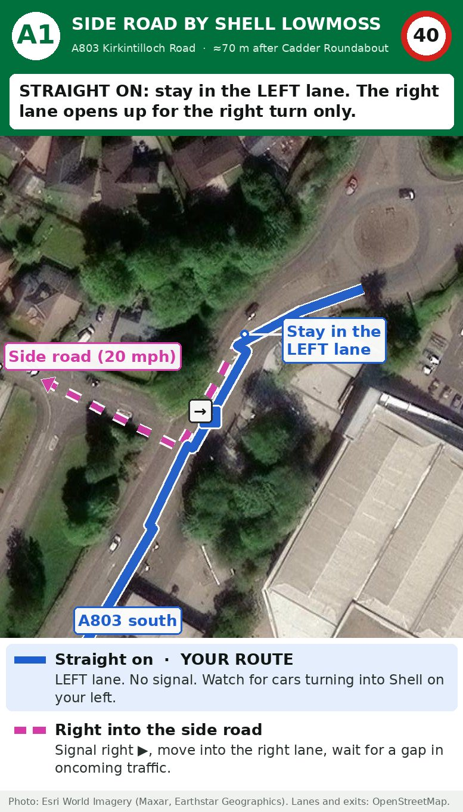
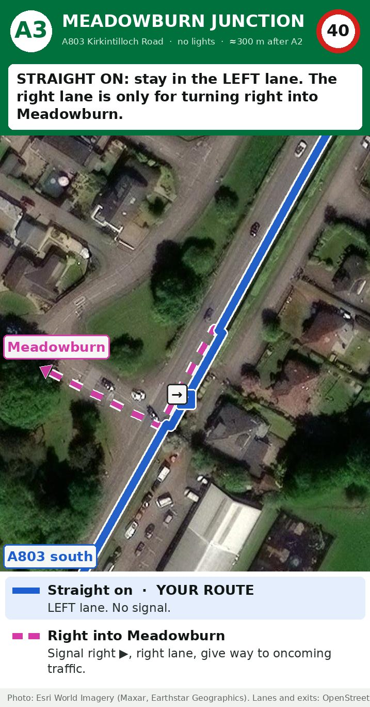
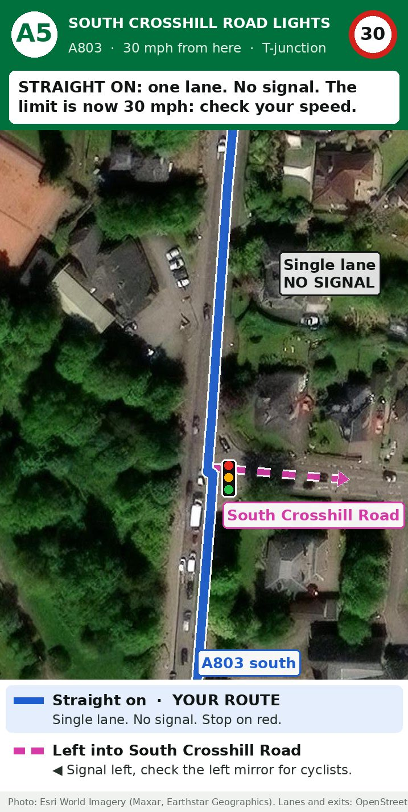
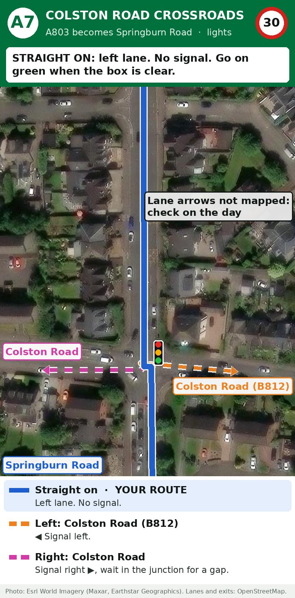
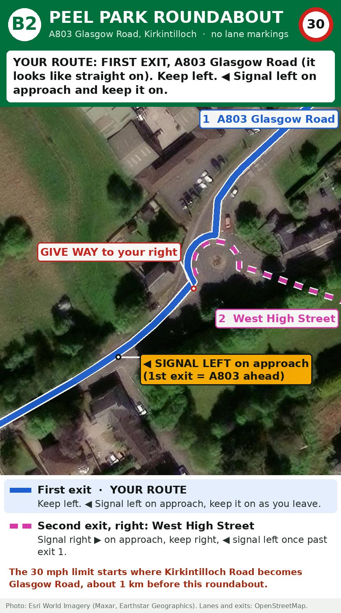
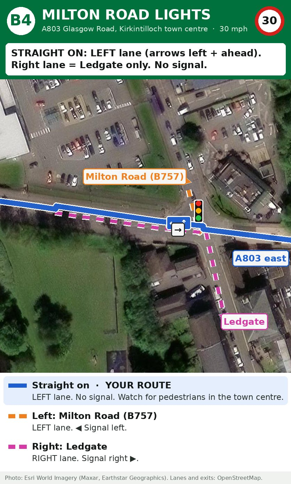

Bishopbriggs Test Route
Every junction is one picture: a real aerial photo with your lane, the painted lane arrows, the lights and the point where you signal drawn on it. Start to Cadder Roundabout, then two extensions: A803 south to Springburn and A803 north to Kirkintilloch.

Tap any junction picture to see it full size.
Start: test centre to Cadder Roundabout
0.85 km on Crosshill Road, 40 mph. Three roundabouts and one set of lights.




Extension A: A803 south to Springburn
From Cadder Roundabout, first exit. 3.1 km to Colston Road. 40 mph, then 30 mph from just after Hilton Road. Distances below are from Cadder Roundabout.




1.1–1.8 kmThe limit drops to 30 mph about 110 m after Hilton Road. Side roads at Wester Cleddens join with no lights and no lane choice: keep straight on and watch for cars pulling out.

≈1.95 kmSpringfield Road (Morrisons) lights on your left, by the Triangle shopping centre. Straight on. Lane arrows are not mapped here.

2.1–3.1 kmOver the railway bridge at Bishopbriggs station and through Auchinairn. Mostly one lane each way, 30 mph.

The guide stops here, about 2.5 miles from the test centre. Beyond Colston Road the A803 is Springburn Road, and about 0.8 km further it becomes a dual carriageway. If your route goes on into Springburn, tell me and I'll add it.
Extension B: A803 north to Kirkintilloch
From Cadder Roundabout, second exit. 4.5 km to Kirkintilloch town centre. Distances below are from Cadder Roundabout.
0–0.9 kmShortly after Cadder the limit rises to 60 mph (national speed limit, single carriageway). Build up speed smoothly and only as conditions allow.

0.9–3.9 kmAbout 2 km of 60 mph road across open country and over the Forth and Clyde Canal. At about 2.9 km it becomes Glasgow Road and the limit drops to 30 mph: be at 30 by the signs.



The guide stops here, about 3.3 miles from the test centre. The A803 continues east through Kirkintilloch towards Kilsyth. Tell me if your route goes further or turns off.
The rule behind every roundabout picture
| Exit | Signal on approach | Lane | Signal to leave |
|---|---|---|---|
| First exit | ◀ Left | Left | Keep left signal on |
| Ahead / middle | None | As marked | ◀ Left after the exit before yours |
| Right / full circle | Right ▶ | Right | ◀ Left after the exit before yours |
Highway Code rule 186. Lane arrows on the road override the usual lane, and on this route they often do: at Lowmoss, Westerhill Road and Torrance the left lane is left only.
Where this comes from, and its limits
- Photos: Esri World Imagery aerial photos (Maxar, Earthstar Geographics). The capture date is not published, so the layout may have changed since.
- Lanes, arrows, exits, speed limits: OpenStreetMap, read on 17 Nov 2026. Each lane arrow in the pictures comes from the map's
turn:lanestags. Volunteers map these, and the arrows painted on the road are too small to check in these photos. Use the Street View links to confirm them. - Not mapped: lane arrows at Colston Road and at the Springfield Road lights. Those pictures say so.
- Direction signs: signs can't be read from above, so I have not transcribed any sign wording. Send phone screenshots from Street View at any junction and I'll add the exact sign text to that card.
- Signals: The Highway Code, rules 159–203.
- The Westerhill Development Road, due by the end of 2027, will add roundabouts near Crosshill Road. On the day, the road markings and the examiner's instruction come first.